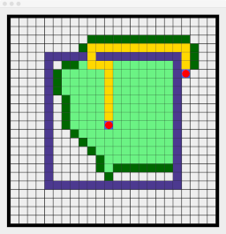

This project implements a version of the A* algorithm for path finding on a 2-D grid of cells, written in a functional style in Scala. Our implementation is inspired by the presentation of this algorithm given in the following pages:
The algorithm takes a 2-D map with obstacles placed in specified cells, along with specified start and target cells. It computes a minimum length path from start to target, each step of which is either a horizontal or a vertical move into an adjacent cell that does not contain an obstacle.
The A* algorithm maintains various collections of cells proceeds from one search step to the next:
As the A* algorithm visits cells it computes a heuristic value for that cell which is expressed as a sum of two values:
To determine the order in which open cells are analysed, we compute their heuristic values and consider those with the lowest heuristics first. To ensure that A* actually finds a minimal length path the function to compute these heuristics must satisfy an admissibility condition.
It is possible that closed cells should be re-opened if a shorter path is found to that cell in the process of investigating other cells. In the simple scenario implemented here, however, our heuristic function satisfies a stronger consistency condition which ensures that we need never re-open a cell once it has been closed.
The following image, which was generated using the Doodle image library, illustrates the state of the A* algorithm at the end of a process of planning a path.

Here the cells containing obstacles are displayed in dark slate blue. The optimal path found is illustrated in gold, and it proceeds from the highlighted red cell inside the box to the highlighted cell outside of the box. The cells displayed in light green are those that had been visited and closed in the process of finding that path. Those in dark green are the cells that remain in the fringe heap when the algorithm terminated.
We use the following abstract data-structures to keep track of these sets of cells:
We provide functional implementations of these abstract data structures based upon 2-3 trees and binomial heaps. These data-structures are immutable and persistent.
BTrees.scala a functional implementation of B-trees or more specifically 2-3 trees. This implements different kinds of B-tree nodes using case classes and makes extensive use of pattern matching.
BinomialHeaps.scala a functional implementation of Binomial Heaps. The key section of this implementation is the heap merge operation provided by the BinomialHeap.mergeAux(). The process of merging two binomial heaps is really just a disguised version of the addition of binary numbers. All of the other binomial heap operations are defined in terms of the merge operation.
AStar.scala this is the core module implementing the A* algorithm. It largely follows the problem and implementation structure discussed on the following Red Blob Games page.
PathPlan.scala provides a class to encapsulate the data generated by executing the A* path planning method. This comprises references to the obstacle map, start and target cells, the planned path as a linked list of cell visit objects, the visited set and the fringe set. It also uses this data to generate a Doodle object which renders this data as an image of the kind shown above.
Main.scala a driver which creates a path planning problem and solves it using the A* algorithm provided by AStar.scala. The planned path, open and closed sets are displayed graphically in a window as a Doodle image.
Values.scala basic container classes representing key-value pairs and prioritised values.
Utils.scala some miscellaneous utility functions.
To compile an execute this code run the Scala simple built tool (sbt) from the root directory of this project and execute the run action to compile the project and run its main() method.
Dominic Verity
Last modified: 13 August 2017
Copyright (c) 2018 by Dominic Verity. Macquarie University. All rights reserved.